2 Univariate Descriptives
This section includes Univariate Descriptives (stratified by Methamphetamine Use) for the key variables in the study.
2.1 Demographic Summary Table
| Overall (N=245) |
|
|---|---|
| Age | |
| Mean (SD) | 30.6 (6.71) |
| Median [Min, Max] | 29.0 [18.0, 50.0] |
| Sex | |
| Female | 98 (40.0%) |
| Male | 147 (60.0%) |
| MA Ingest | |
| Yes | 58 (23.7%) |
| No | 187 (76.3%) |
| MA User Type | |
| Recreational | 6 (2.4%) |
| MUD | 52 (21.2%) |
| Non-User | 187 (76.3%) |
| License Status | |
| Valid/current | 245 (100%) |
| Former/lapsed | 0 (0%) |
| Education | |
| Did not finish high school | 7 (2.9%) |
| High School Diploma | 30 (12.2%) |
| Vocational/Technical degree or certificate | 44 (18.0%) |
| Did not finish University | 67 (27.3%) |
| Bachelor Degree | 77 (31.4%) |
| Postgraduate Degree | 20 (8.2%) |
| Ethnicity | |
| North-West European | 101 (41.2%) |
| American | 74 (30.2%) |
| Oceanian | 40 (16.3%) |
| Eastern European | 10 (4.1%) |
| Undisclosed | 7 (2.9%) |
| South-East Asian | 7 (2.9%) |
| Central Asian | 2 (0.8%) |
| Middle-East | 2 (0.8%) |
| Asian | 1 (0.4%) |
| African | 1 (0.4%) |
| Area of Residence | |
| Rural | 10 (4.1%) |
| Suburban | 99 (40.4%) |
| Urban/Inner-city | 136 (55.5%) |
2.2 Distribution of Demographics
2.2.1 MA Use

2.2.2 Sex

2.2.3 Age

2.2.4 Education
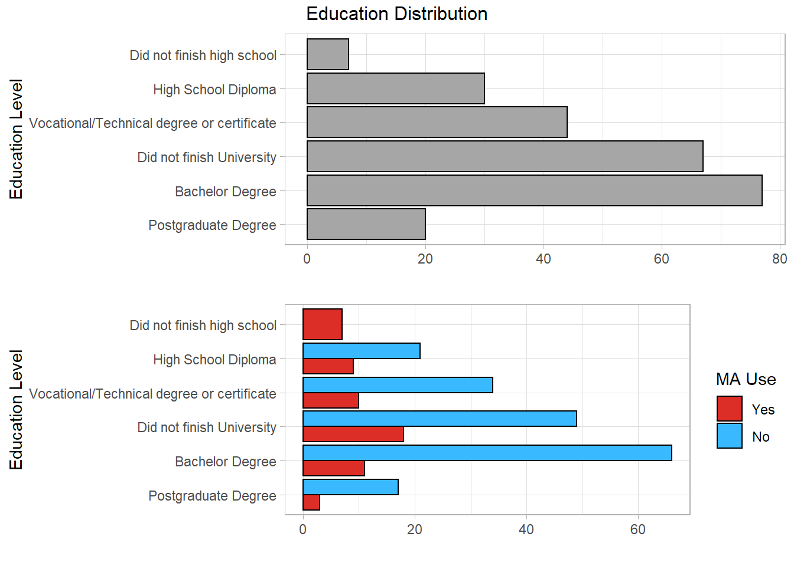
2.2.5 Ethnicity
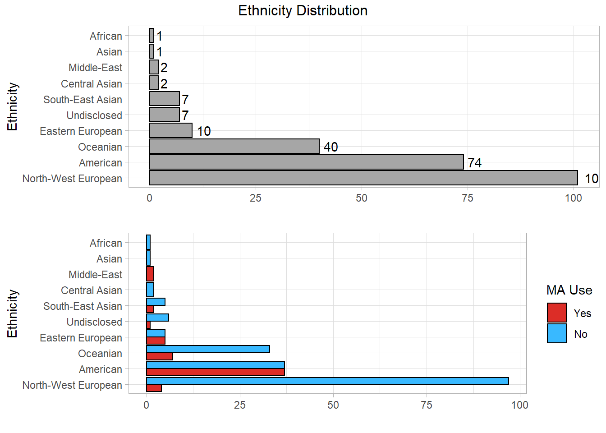
2.2.6 Area of Residence
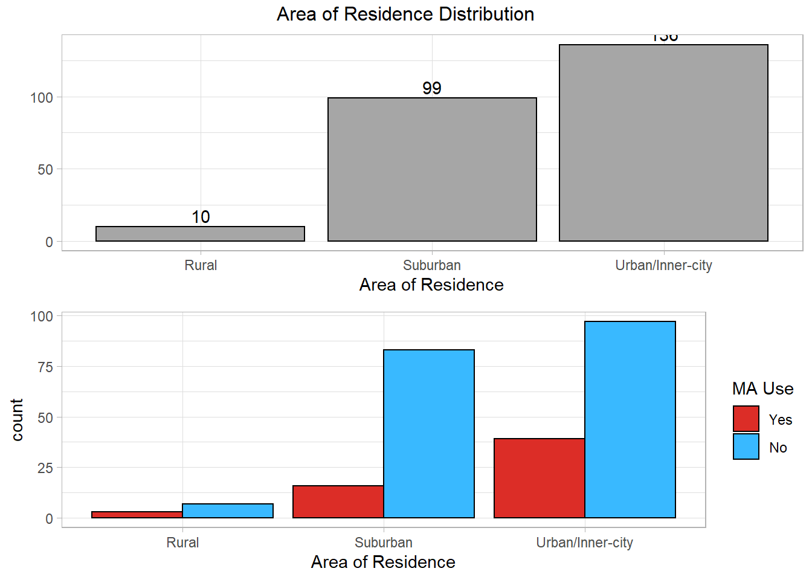
2.3 Distribution of key variables by MA Use
2.3.1 Dula Dangerous Driving Index (DDDI)
About
The DDDI includes 28\(^*\) items (divided into 3 categorical subscales) with each item assessing a persons tendency to engage in certain driving practices or beliefs held around specific driving behaviours. Each item is scored on a 5-point Likert scale from 1 (Never) to 5 (Always).
The total score can be used as a composite measure for one’s tendency and/or willingness to engage in dangerous driving. Scores can range from 27 to 135.
Subscales:
Aggressive Driving: Assessed with 7 items which reflect behaviours that are intentionally meant to annoy, irritate or punish other drivers. E.g. I flash my headlights when I am annoyed by another driver.
Scores range from 7 to 35.
Negative Emotional Driving: Assessed with 9 items which gauge irritability and anger while driving and the tendency to become annoyed with other drivers. E.g. I lose my temper while driving.
Scores range from 9 to 45.
Risky Driving: Assessed with 11 items which gauge ones willingness to engage in unsafe driving behaviours. E.g. I will “drag race” other drivers at stop lights to get out front.
Scores range from 11 to 55.
\(^*\)The present study used 27 items with one item from the “Risky Driving” subscale - I will weave in and out of slower traffic - omitted from the questionnaire.
Total Score
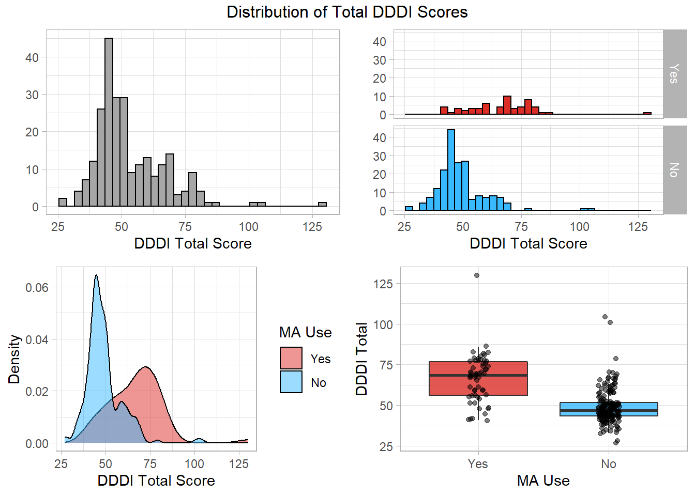
Aggressive Driving
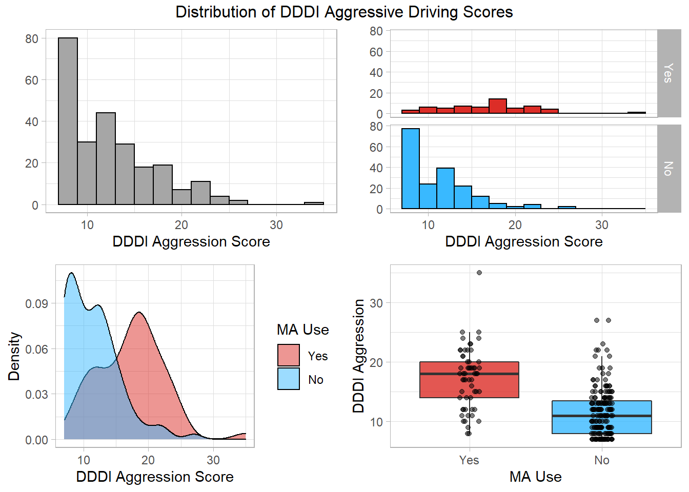
Negative Emotional Driving
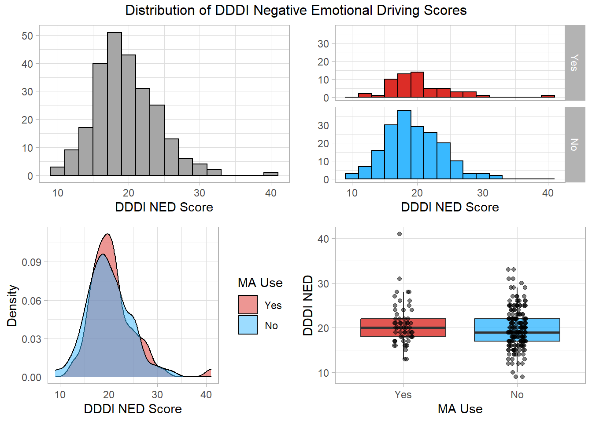
Risky Driving

Aggressive Driving Items


Negative Emotional Driving Items
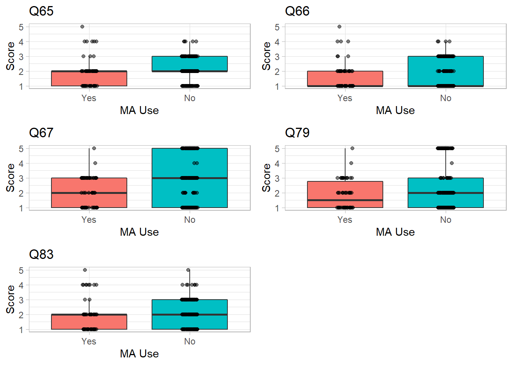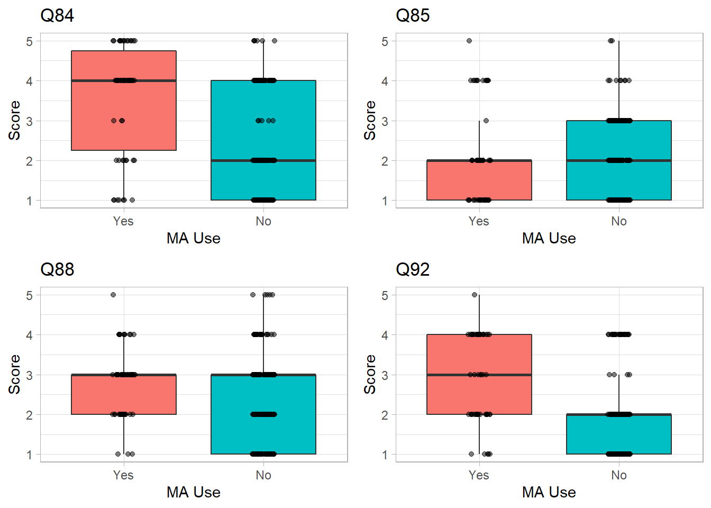
Risky Driving Items
 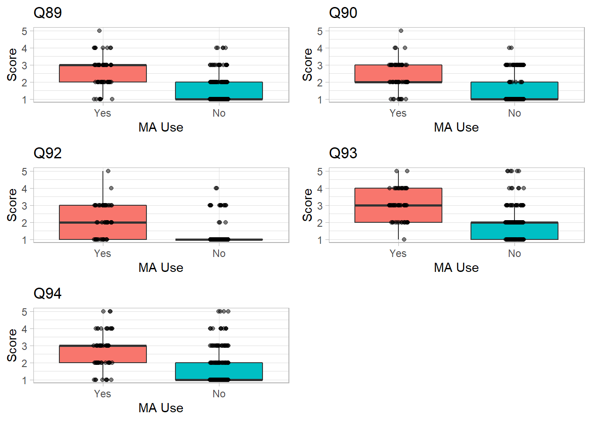
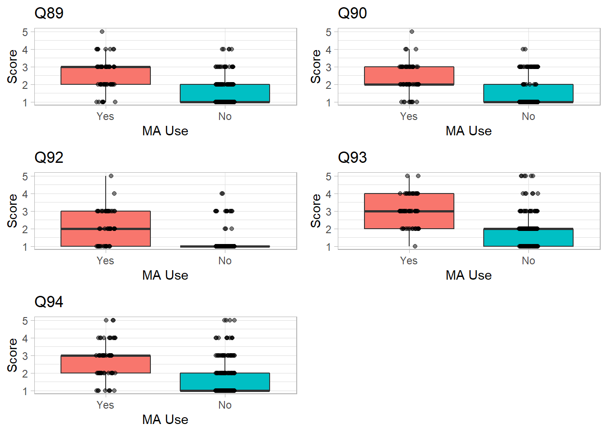
2.3.2 STAXI-2
About
The State-Trait Anger Expression Inventory (STAXI-2) is designed to understand the attitudes, emotional states and behaviours that are typical to a person in regard to their feelings, control and expression of anger. It distinguishes anger between being a passing/present state as a personality trait.
The full STAXI-2 contains 57 items grouped into 12 subscales which lie under three factors (State Anger, Trait Anger and Anger Control and Expression).
For the purposes of this study, only the subscacles relating to State and Trait Anger were used.
Scoring
Each Item on the STAXI-2 is rated on a 4-point Likert scale from 1 (Not al all/Almost Never) to 4 (Very much so/Almost Always). Total score for State or Trait Anger is obtained by adding up the items from each subscale. Total scores for the subscales are obtained by adding up the scores of each item for the corresponding subscale.
State Anger
Assesses the intensity of the individual’s angry feelings at time of testing.
Subscales:
Feeling Angry (S-Ang/F): Measures the intensity of the angry feelings the person may be experiencing.
Feel like verbally expressing anger (S-Ang/V): Measures the intensity of the current feelings related to the verbal expression of anger.
Feel like physically expressing anger (A-Ang/P): Measures the intensity of the current feelings related to the physical expression of anger.
Trait Anger
Measures the general tendency of a person to get angry.
Subscales:
Angry Temperament (T-Ang/T): Measures the disposition to experience anger without specific provocation.
Angry Reaction (T-Ang/T):
Measures the frequency with which angry feelings are experienced in situations that involve frustration and/or negative evaluations.
State Anger Total

State anger Subscales

Trait Anger Total

Trait Anger Subscales
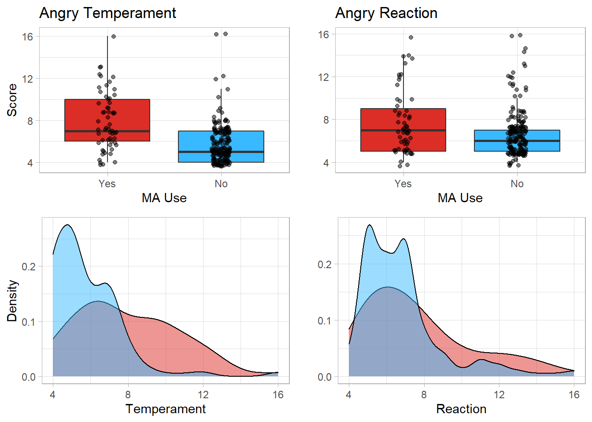
2.3.3 K6 Distress Scale
The K6 Distress scale is a 6-item assessment that measures overall distress from depressive and anxiety related symptoms.
It measures distress for the period 4 weeks prior to administration of the test.
Each Item is rated on a 5-point\(^*\) likert scale ranging from 1 (none of the time) to 5 (all of the time).
Total score is obtained by simply adding up the item scores together.
\(^*\)The present study used a 4-point scale for the item During the past 30 days, about how often did you feel depressed? with the level “A little of the time” omitted from the survey.
Numeric summary
| Overall (N=245) |
|
|---|---|
| K6 Distress Score | |
| Mean (SD) | 12.6 (4.57) |
| Median [Min, Max] | 12.0 [6.00, 28.0] |
| Missing | 3 (1.2%) |
| Overall (N=58) |
|
|---|---|
| K6 Distress Score | |
| Mean (SD) | 17.4 (4.94) |
| Median [Min, Max] | 17.0 [9.00, 28.0] |
| Missing | 1 (1.7%) |
| Overall (N=187) |
|
|---|---|
| K6 Distress Score | |
| Mean (SD) | 11.2 (3.30) |
| Median [Min, Max] | 11.0 [6.00, 24.0] |
| Missing | 2 (1.1%) |
K6 Distribution

2.3.4 Severity Dependence Scale (SDS)
The SDS is a 5 item questionnaire that provides a score indicating the severity of dependence on a given substance. Each item is scored from 0 to 3, with a higher score indicating greater dependence.
Those whose total score is above 4 are considered to be dependent users.
| Overall (N=58) |
|
|---|---|
| SDS | |
| Mean (SD) | 7.43 (2.51) |
| Median [Min, Max] | 8.00 [0, 11.0] |
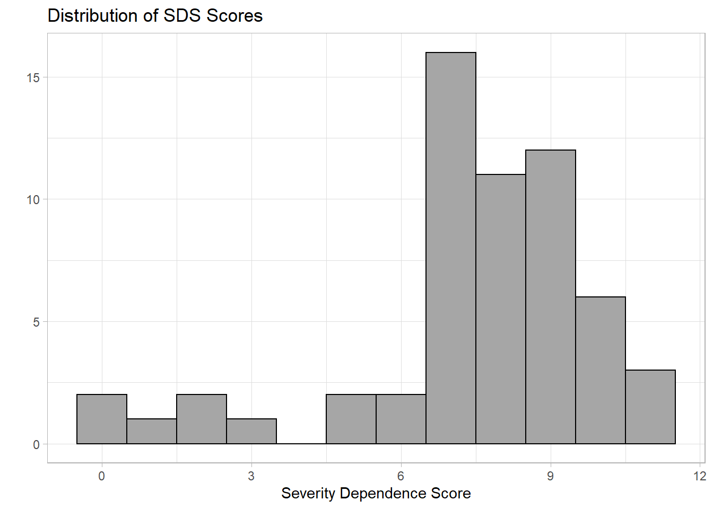
2.3.5 Attitudes
Two questionnaires designed to assess participants attitudes toward drink and drug driving were administered.
Each questionnaire included 10 items rated on a 7-point Likert scale indicating to what extend the participant agreed or disagreed with the statement (e.g. My community needs stricter laws against drink driving). After taking into account items that were reverse scored (e.g. It’s OK to drive after drinking as long as you’re not too drunk), total scores were calculated with higher scores indicating a more favourable attitude toward drink or drug driving.
Attitudes toward Drink Driving (DUI)
| Overall (N=245) |
|
|---|---|
| DUI Attitude Total | |
| Mean (SD) | 29.8 (7.14) |
| Median [Min, Max] | 28.0 [10.0, 52.0] |
| Overall (N=58) |
|
|---|---|
| DUI Attitude Total | |
| Mean (SD) | 36.9 (7.55) |
| Median [Min, Max] | 37.5 [24.0, 51.0] |
| Overall (N=187) |
|
|---|---|
| DUI Attitude Total | |
| Mean (SD) | 27.5 (5.32) |
| Median [Min, Max] | 27.0 [10.0, 52.0] |

Attitudes toward Drug Driving
| Overall (N=245) |
|
|---|---|
| DUID Attitude Total | |
| Mean (SD) | 31.2 (8.29) |
| Median [Min, Max] | 31.0 [10.0, 54.0] |
| Missing | 14 (5.7%) |
| Overall (N=58) |
|
|---|---|
| DUID Attitude Total | |
| Mean (SD) | 39.1 (7.78) |
| Median [Min, Max] | 40.0 [24.0, 54.0] |
| Missing | 1 (1.7%) |
| Overall (N=187) |
|
|---|---|
| DUID Attitude Total | |
| Mean (SD) | 28.6 (6.66) |
| Median [Min, Max] | 29.5 [10.0, 50.0] |
| Missing | 13 (7.0%) |